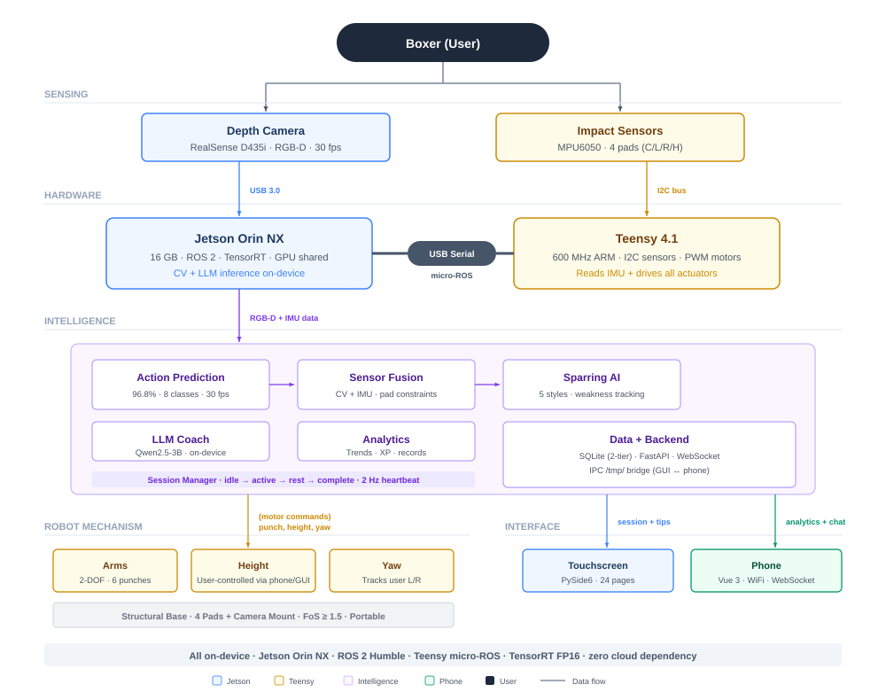

IS-431: An Intelligent Boxing Robot to Assist in Boxing Training

Muhammad Zakir Haziq
Engineering Science, Year 4- Ch. 1-4
- Ch. 5.1 User Interface (GUI)
- Ch. 5.2.4 Mechanical Design for Padding
- Appendix 3-5
- Annex

Elgin Ng Jun Hao
Engineering Science, Year 4- Ch. 5.2 Robot Mechanism (Arm Actuation, Padding)
- Appendix 1

Jeanette Sim Yu
Engineering Science, Year 4- Ch. 4.1 System Overview
- Ch. 5.2 Robot Mechanism (Base, Rotation, Height Adjustment)
- Appendix 2

Muthukumaran Yogeeswaran
Engineering Science, Year 4- Ch. 5.3 Robotic Intelligence
- Appendix 6
Table of Contents
5. Final BoxBunny Design
Chapter 5 presents the realised implementation of the BoxBunny system, advancing from the conceptual architecture established in Chapter 4 to the engineered, integrated, and verified prototype. The system is structured across three primary subsystem domains: 1. User Interface (Section 5.1): Translates user intent into training session control and presents real-time performance feedback to the practitioner. 2. Robot Mechanism (Section 5.2): Encompasses the physical actuation hardware, structural frame, and embedded electronics. 3. Robot Intelligence layer (Section 5.3): Provides computer vision-based punch classification, adaptive sparring control, and on-device language model coaching. Each subsystem domain was developed in accordance with the V-Model engineering framework introduced in Section 3.2, with measurable requirements established prior to design, subsystem design conducted before integration, and formal verification executed against pre-defined acceptance criteria. The interactive three-dimensional model below presents the physical integration of all five mechanism subsystems into the finalized assembly.
System Integration

Figure 7: BoxBunny Overall System DiagramThe three subsystem domains are unified through a ROS 2 communication framework executing on an NVIDIA Jetson Orin NX compute module. User inputs entered through the touchscreen interface are relayed as session commands to the Robot Intelligence layer, which coordinates computer vision inference, inertial measurement unit sensor fusion, and the adaptive sparring finite-state machine. Actuation commands are issued from the Robot Intelligence layer to the Robot Mechanism over a shared CAN bus, with a Teensy 4.0 microcontroller executing a deterministic 200 Hz firmware loop that manages motor command dispatch and sensor polling. A dual-rail power architecture electrically isolates the 24 V motor bus from the 12 V logic rail, preventing regenerative braking transients from disrupting the control subsystem. The base rotation axis communicates over a dedicated WiFi UDP link, eliminating cable fatigue through the rotating base joint. Linear footwork movement was descoped from the current prototype; the remaining five mechanism subsystems, comprising the base, rotation, height adjustment, padding, and arm actuation, were each developed to a verified standard within the available project timeframe.
Design Objectives
The system requirements across each subsystem trace back to five design objectives derived from user research and competitor analysis in Section 2.5. The table below maps each code to its objective; full rationale and subsystem coverage are detailed in Section 2.5 and Appendix 6.
| Code | Design Objective |
|---|---|
| DO-1 | Performance Analytics |
| DO-2 | Intelligent Sparring System |
| DO-3 | Skill Progression Studio |
| DO-4 | Adaptive Fight Intelligence |
| DO-5 | Modular Boxing Platform |
Subsystem Documentation
Appendices
Click on each appendix below to view the detailed calculations and analysis.
Appendix 1
Upper Mechanism (Elgin)
Appendix 2
Lower Mechanism (Jeanette)
Appendix 3
GUI Interface (Zakir)
Appendix 4
User Interview Questions (Zakir)
Appendix 5
User Interview Data & Analysis (Zakir)
Appendix 6
Product Needs Mapping (Zakir)
Appendix 7
Robot Intelligence (Yogeeswaran)
Appendix 8
System Troubleshooting & Iteration (Elgin)
Annex: Extended Introduction
Boxing is widely recognized as a physically demanding and inherently dangerous sport. The World Medical Association has raised particular concern, stating that the "main medical argument against boxing is the risk of chronic traumatic encephalopathy (CTE)", a degenerative brain condition linked to repeated head trauma. Beyond long-term neurological risks, acute injuries are also prevalent in competitive boxing (G., Magdalena, Lindsay, I., & M., 2019).
A comparative study analysing 7,712 athlete exposures across three consecutive Olympic Games emphasised the pressing need for "injury prevention initiatives to reduce the burden of injury among combat sport athletes." Notably, the findings revealed that injury risk in boxing shows "no difference by sex, weight category, or tournament round," accenting that the hazards of the sport affect athletes indiscriminately, regardless of demographic or competitive context (Lystad, Alevras, Rudy, Soligard, & Engebretsen, 2021).
Given these challenges, there is a growing necessity for solutions that mitigate injury risk during training. This is especially crucial for elite athletes, where sparring remains an indispensable component of preparation but simultaneously exposes them to the highest risk of harm. Therefore, alternative training methods are needed, approaches that replicate the intensity and realism of sparring while offering a safer environment.
The sports technology sector has grown considerably in recent years, with the global market projected to reach USD 55.9 billion by 2028 (Grand View Research, 2018). This growth is driven by demand for AI-assisted coaching and real-time performance analytics. Falling hardware costs and advances in computer vision have also made robotics a practical option for physical training applications, a shift already seen in tennis ball machines and batting-practice robots used in professional academies.
This project, BoxBunny, addresses this gap by developing a boxing training robot capable of delivering dynamic punch stimuli and adapting training difficulty without requiring a human sparring partner. The system targets recreational to competitive boxers in a gym setting. It is not intended to replace professional sparring, but to serve as a supplementary training tool that extends the quality of practice a boxer can undertake independently.
Annex: Extended Background
Sparring is widely regarded as the cornerstone of boxing training, as it represents the "combat" element of the sport and enables athletes to put their techniques into practice under realistic conditions. It is during sparring training that boxers sharpen essential skills such as timing, defence, and adaptability under pressure. However, research indicates that "repetitive sub-concussive trauma from frequent and intense sparring training appears to be a significant risk for developing neurological sequelae", highlighting the health risks associated with its practice (Stiller, et al., 2014). While sparring training remains indispensable, these risks point to the need for safer alternatives that can replicate its training benefits without compromising athlete well-being.
To better understand this problem, our team engaged directly with the boxing community by signing up for boxing gym memberships. We conducted user interviews, alongside a secondary survey of existing solutions and competitors in the boxing training landscape. From these findings, we developed two value proposition canvases to capture the needs and pain points of both boxers and the community.